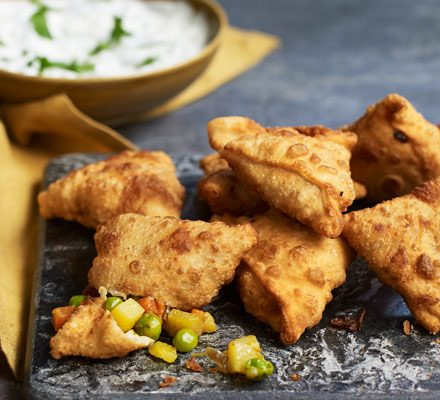

Vegetable Samosa

Pastry dish from India
A delicious starter dish which is commonly eaten in India
Ingredients
- 1 tbsp vegetable oil
- 1 onion, finely chopped
- 2 garlic cloves, crushed
- 1 potato (about 150g) finely diced
- 1 carrot (about 100g) finely diced
- 100g frozen peas
- 2 tsp curry powder or your own spices according to taste
- 100ml vegetable stock
For the pastry
- 225g plain flour
- 2 tsp sea salt
- 2 tbsp vegetable oil
- 21 vegetable oil to deep fry